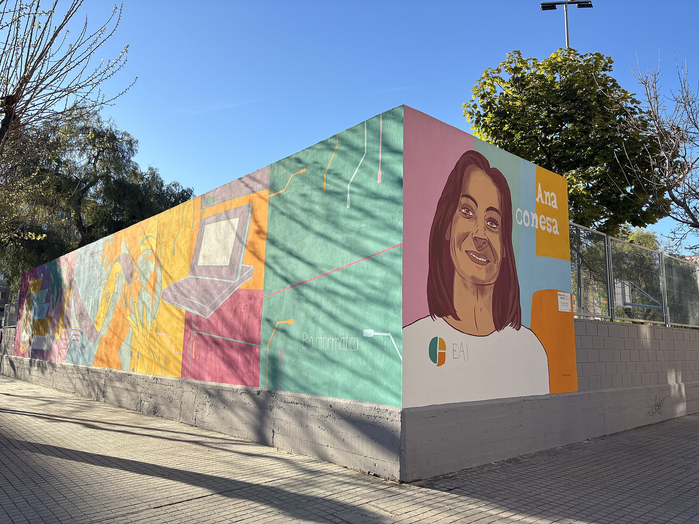

J'ai passé des heures sur les groupes Facebook de parents, les forums d'expats, les avis Google Maps. Ce que tu vas lire c'est pas un classement objectif : c'est mon ressenti de père de trois gamins qui cherche la meilleure école possible. Si j'avais eu cette page sous les yeux il y a six mois, j'aurais gagné un temps fou. Alors la voilà.

Benimaclet : le quartier qui nous fait de l'œil
Un ancien village bouffé par la ville mais qui a gardé sa vibe. Des places où les gamins jouent au foot pendant que les parents boivent un verre. Métro L3, pistes cyclables, étudiants et jeunes familles mélangés. Nous on adore.
CEIP Carles Salvador
Très bonne réputation et équipe pédagogique au top. Attention : enseignement majoritairement en valencien. Idéal si les enfants ont déjà des bases d'espagnol.
CEIP Benimaclet
Bonne école de quartier avec un programme bilingue équilibré castillan et valencien. Ambiance conviviale et intégration en douceur.
Honnêtement, si on atterrit à Benimaclet, on fera les deux visites. Le quartier nous botte vraiment.
Patraix : le plan B qui ressemble à un plan A
Calme, familial, des rues piétonnes avec des orangers. Le métro (L1, L2) te pose au centre en 4 minutes. On s'y verrait bien. Voire très bien.
CEIP Doctor Olóriz
Une des meilleures notes de la ville. Programme bilingue de grande qualité et équipe très impliquée. Notre coup de cœur absolu à Patraix.
CEIP José Soto Micó
Établissement historique et solide avec d'excellents retours. Pédagogie un peu plus traditionnelle mais très rassurante.
Notre avis : Patraix, c'est peut-être le meilleur compromis qualité/prix/écoles. Doctor Olóriz fait rêver, et le quartier coche toutes les cases « famille ».
Campanar : le cocon près de l'hôpital
Résidentiel propre, immeubles récents, rues larges où la poussette roule sans accroc. Plus cher que Patraix mais la proximité de l'hôpital La Fe - le plus grand et moderne de Valencia, avec un service pédiatrique de référence - ça rassure quand t'as trois jeunes enfants.
CEIP 9 d'Octubre
Programme plurilingue d'excellence. L'une des écoles vitrines de la ville pour l'apprentissage des langues vivantes.
CEIP Campanar
Bâtiment moderne et bien équipé avec une ambiance très saine. Moins sélective que 9 d'Octubre mais très soignée.
Campanar on aime. Le budget loyer fait un peu mal mais franchement, pouvoir aller à La Fe à pied avec un gamin malade à 3h du mat', ça vaut de l'or.
Ruzafa : branché, bruyant, et alors ?
Ruzafa (ou Russafa), c'est le Marais de Valencia. Bars à tapas, cafés de spécialité, galeries d'art. Le soir, ça vit. Et parfois ça vit un peu TROP si t'as des enfants qui se couchent à 20h.
CEIP Jaime Balmes
En plein centre historique de Ruzafa, avec une belle mixité sociale et un ancrage culturel fort dans le quartier.
CEIP Eduardo Marquina
École de quartier sans chichi, enseignement en castillan avec de bons retours de parents. Elle fait parfaitement le job.
À savoir : le bruit du quartier le soir c'est pas un mythe. Avec des enfants de 4 et 6 ans, faut soit viser une rue très calme, soit un appart qui donne sur cour intérieure. Ou alors… accepter que tes gamins s'endorment au son des conversations de terrasse. C'est aussi ça, l'Espagne.
Ensanche / Gran Vía : le centre-ville chic
Immeubles bourgeois, grandes avenues. Tout à pied. C'est magnifique. Et cher, forcément.
CEIP Cervantes
Établissement historique prestigieux, enseignement en castillan. Très demandé dans le secteur : vérifier scrupuleusement la carte scolaire.
CEIP Balmes
Très bonne école bilingue bien située sur la Gran Vía. Excellente option si Cervantes affiche complet lors des inscriptions.
Ensanche, c'est le rêve niveau praticité. Mais un 4 pièces dans le coin, ça douille. On garde sous le coude.
El Cabanyal : la plage au bout de la rue
Ancien quartier de pêcheurs en pleine renaissance. Des maisons colorées avec des azulejos. Le tram te met au centre en 15 minutes, la plage est à 5 minutes à pied. Pour le combo ville + mer, c'est dur de faire mieux.
CEIP Serrería
Récemment rénové avec une très bonne réputation. Programme bilingue et grande dynamique pédagogique saluée par les parents.
CEIP Les Arenes
Très bien noté à deux pas du bord de mer. L'air marin depuis la cour de récréation, un cadre unique au quotidien.
CEIP Santiago Russinyol
Petite école conviviale à l'ambiance maritime charmante. Enseignement à dominante valencienne.
Cabanyal, on l'a visité. L'ambiance est dingue. Le seul bémol, c'est que le quartier est encore contrasté : une rue rénovée, la suivante en travaux. Faut choisir son spot avec soin. Mais dans 5 ans, ça vaudra de l'or.
Alboraya : la plage, le calme, et le métro
Techniquement c'est une ville à part, collée à Valencia. Mais le métro L3 te pose au centre en 12 minutes. Et t'as la plage de la Patacona : immense, propre, hyper familiale.
CEIP Cervantes
La grande référence publique d'Alboraya, bien notée avec un programme bilingue castillan et valencien équilibré.
CEIP Ausiàs March
Bonne réputation générale avec des équipes dévouées. Attention à la dominante en langue valencienne selon vos priorités.
Alboraya coche énormément de cases : calme, plage, métro, loyers plus doux que le centre. C'est le compromis parfait entre ville et bord de mer. Nos soirées seront plus Netflix que concerts, mais avec trois gamins, c'est peut-être pas plus mal.
Ma méthode pour choisir (et la tienne ?)
D'abord la langue. Élimine les écoles en valencien majoritaire si tes enfants partent de zéro en espagnol. Une langue à la fois, c'est déjà bien.
Ensuite le quartier. L'école dépend de ton adresse. Choisis les deux en même temps, pas l'un après l'autre.
Puis va voir. Contacte les écoles, demande une visite. Les directeurs sont ouverts. Rien ne remplace la sensation que t'as en entrant dans la cour.
Et pense fratrie. Trois enfants = des points bonus dans le barème. Mentionne-le.
Et surtout ne stresse pas. Sincèrement. Le système scolaire espagnol est bon, les gamins sont bien accueillis. À leur âge, ils s'adapteront mille fois plus vite que toi. C'est humiliant, mais c'est comme ça.
« Le système scolaire espagnol est bon, les gamins sont bien accueillis. À leur âge, ils s'adapteront mille fois plus vite que toi. »
Florian · Retour d'expérience écoles🔗 Pour creuser
Conselleria d'Educació : ceice.gva.es - Portail inscriptions : telematricula.es